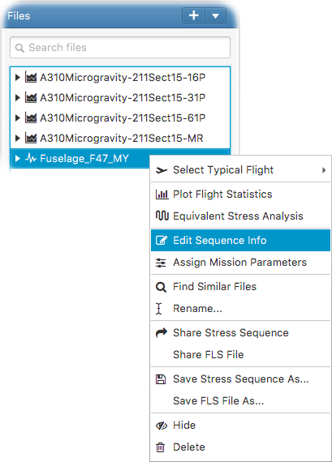

How to edit stress sequence info
You can edit stress sequence attributes such as A/C program, section and fatigue mission by right-clicking on an external stress sequence and selecting
- Edit Sequence Info
from the popup menu as shown in the following figure.
